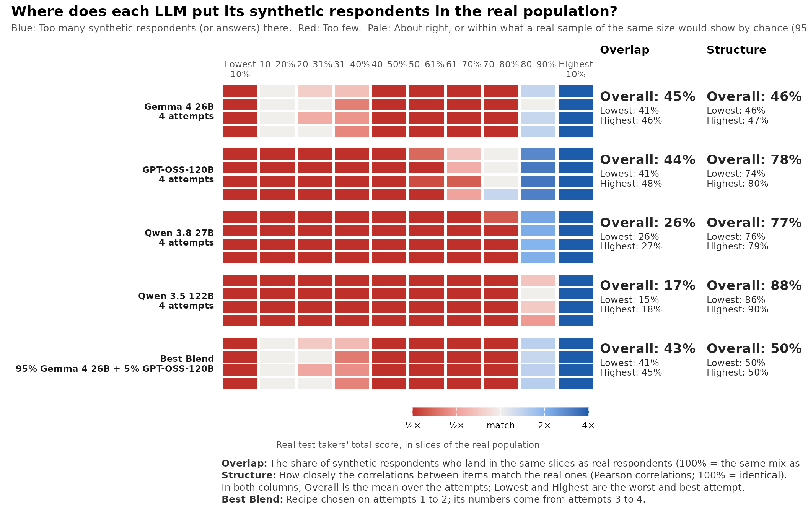
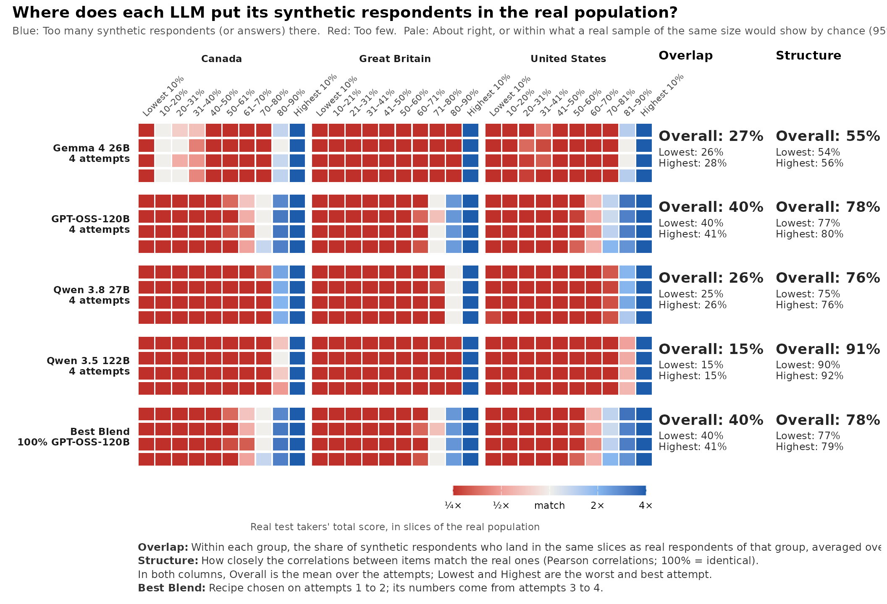
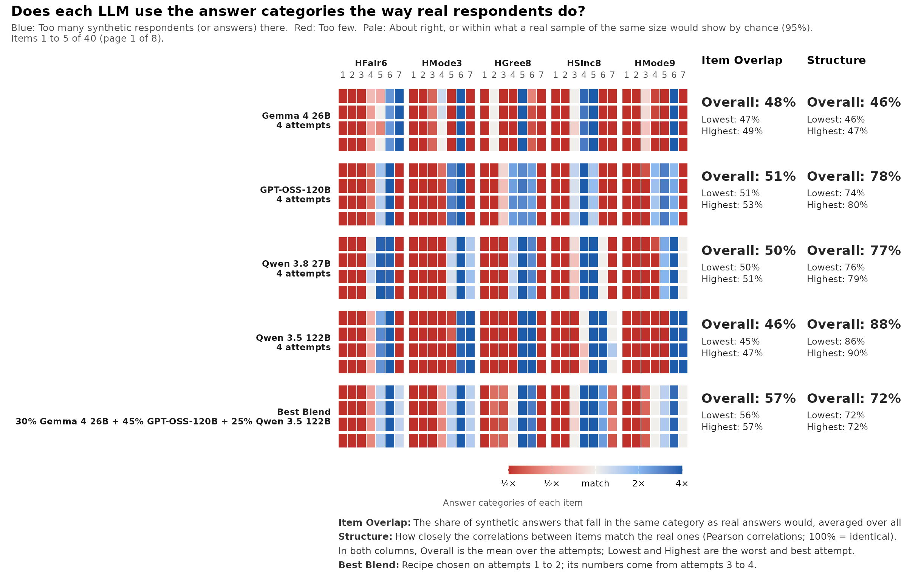

Checking synthetic respondents: The coverage strip
Source:vignettes/articles/synthetic-coverage.Rmd
synthetic-coverage.RmdLarge language models can answer questionnaire items as if they were a person. Before such synthetic respondents are used for anything (piloting items, checking a scale, or simply judging whether a model “behaves like people”), it helps to see where they land in the real population. Means and correlations can look fine while most of the real population is missing from the synthetic sample.
The coverage strip in mirtverse shows this in one picture.
synthetic_coverage() compares synthetic answers with real
answers to the same items, and gg_coverage() draws the
strip. The functions are experimental: Their arguments
may still change.
The example data
mirtverse ships the data of a study of synthetic HEXACO respondents:
-
hexaco_real: 17,874 real people from Canada, Great Britain and the United States who answered the 240 IPIP-HEXACO items (Open-Source Psychometrics Project). -
hexaco_llm: 59,611 synthetic respondents to the same items from four open-weight language models (Gemma 4 26B, GPT-OSS-120B, Qwen 3.8 27B and Qwen 3.5 122B), generated for the same three countries in 10 attempts of about 500 respondents each. -
hexaco_items: the items, their trait and facet, and whether they are reverse-keyed.
Answers are on a 1 to 7 scale and are stored as given, so reverse-keyed items must be reversed before scores are formed. To keep the example small, we use the 40 Honesty-Humility items, Canada only, and the first four attempts of each model.
library(mirtverse)
h <- hexaco_items$item[hexaco_items$trait == "H"] # 40 items
rev_items <- intersect(h, hexaco_items$item[hexaco_items$reverse])
keyed <- function(d) { # reverse-key
d <- d[h]
d[rev_items] <- 8 - d[rev_items]
d
}
real <- keyed(hexaco_real[hexaco_real$country == "Canada", ])
ca <- hexaco_llm[hexaco_llm$country == "Canada" & hexaco_llm$attempt <= 4, ]
synthetic <- lapply(split(ca, ca$model), function(m) lapply(split(m, m$attempt), keyed))
str(synthetic, max.level = 1)
#> List of 4
#> $ Gemma 4 26B :List of 4
#> $ GPT-OSS-120B :List of 4
#> $ Qwen 3.8 27B :List of 4
#> $ Qwen 3.5 122B:List of 4synthetic_coverage() takes a named list with one
element per model, and each element is a list of attempts (data
frames with the same items as the real data). Your own synthetic data do
not have to come from mirtverse; any data frames in this shape work.
Drawing the strip
cov <- synthetic_coverage(synthetic, real, cor = "pearson")
cov
#> <mv_coverage> 4 model(s), 40 item(s), coverage of real total-score slices (EXPERIMENTAL)
#> model attempts overlap_overall overlap_lowest overlap_highest
#> Gemma 4 26B 4 45% 41% 46%
#> GPT-OSS-120B 4 44% 41% 48%
#> Qwen 3.8 27B 4 26% 26% 27%
#> Qwen 3.5 122B 4 17% 15% 18%
#> Best Blend 2 43% 41% 45%
#> structure_overall structure_lowest structure_highest
#> 46% 46% 47%
#> 78% 74% 80%
#> 77% 76% 79%
#> 88% 86% 90%
#> 50% 50% 50%
#>
#> Best Blend: 95% Gemma 4 26B + 5% GPT-OSS-120B (chosen on attempts 1 to 2; its numbers come from attempts 3 to 4)
#>
#> * 1 real respondent(s) with missing answers are left out of the score
#> slices.
gg_coverage(cov)
How to read it
- Columns are slices of the real population. By default they are deciles of the real total score: Each column holds 10% of the real respondents, from the lowest 10% on the left to the highest 10% on the right.
- Rows are attempts. Each block of rows is one model, and each row is one attempt, so you can see at once whether a pattern repeats.
- Colour compares the share of synthetic respondents in a slice with the real share (10%). Blue means too many synthetic respondents there, red means too few. Pale means about right, or within the range a real sample of the same size would show by chance (95%). That noise check keeps a 500-person attempt from looking worse than it is.
- Overlap is the share of synthetic respondents who land where real respondents do: The sum over slices of the smaller of the two shares. 100% means the same mix of slices as the real population; a sample that puts everyone in one decile scores about 10%.
- Structure is how closely the correlations between items match the real ones: One minus the mean absolute difference between the real and synthetic correlations (100% means identical).
- Best Blend is the mixture of models with the highest Overlap. With four or more attempts, the recipe is chosen on the first half of the attempts and its numbers come from the second half, so a lucky fit to noise is not rewarded.
Here every model puts far too many synthetic Canadians in the top decile of real Honesty-Humility (dark blue on the right) and too few in most other deciles (red). The rows within each model look alike, so this is how the models behave, not one bad run. Note also the two columns on the right: Qwen 3.5 122B has the best Structure and the worst Overlap. A model can know which items go together and still put its respondents in the wrong place, which is why the strip shows both.
Comparing groups
When the synthetic respondents were generated for groups (countries,
personas, regions), pass the group column with group. With
within_group = TRUE, slices and shares are taken within
each group, so each group’s synthetic respondents are compared with the
real respondents of the same group, and Overlap is averaged over the
groups.
real3 <- data.frame(country = hexaco_real$country, keyed(hexaco_real))
four <- hexaco_llm[hexaco_llm$attempt <= 4, ]
synthetic3 <- lapply(split(four, four$model), function(m)
lapply(split(m, m$attempt), function(a) data.frame(country = a$country, keyed(a))))
cov3 <- synthetic_coverage(synthetic3, real3, group = "country",
within_group = TRUE, cor = "pearson")
gg_coverage(cov3)
Use within_group = TRUE whenever the real and synthetic
samples have a different mix of groups. Here the real data are mostly
American (15,017 of 17,874) while the synthetic data are split evenly;
without within_group, the difference in the mix would
colour whole blocks.
Looking at items
slices = "item" changes the columns to the response
categories of each item. The strip then shows which answers the models
over-use and which they avoid, and Item Overlap
replaces Overlap. With many items, the strip is paged;
order = "worst" (the default) puts the items with the
lowest Item Overlap first.
cov_items <- synthetic_coverage(synthetic, real, slices = "item", cor = "pearson")
gg_coverage(cov_items, items_per_plot = 5)
Most items show a few heavily used categories next to nearly empty ones, and the extreme categories are often red: The models seldom give the strongest answers that real people often give. This is one reason the synthetic score distributions are too narrow.
Tidy output
Every number in the strip is available as data, for tables or your own plots:
tidy(cov) # one row per model: Overlap and Structure
#> # A tibble: 5 × 8
#> model attempts overlap_overall overlap_lowest overlap_highest
#> <chr> <int> <dbl> <dbl> <dbl>
#> 1 Gemma 4 26B 4 0.446 0.413 0.465
#> 2 GPT-OSS-120B 4 0.437 0.413 0.483
#> 3 Qwen 3.8 27B 4 0.261 0.257 0.270
#> 4 Qwen 3.5 122B 4 0.172 0.150 0.184
#> 5 Best Blend 2 0.430 0.413 0.447
#> # ℹ 3 more variables: structure_overall <dbl>, structure_lowest <dbl>,
#> # structure_highest <dbl>
head(cov$attempts) # one row per attempt
#> # A tibble: 6 × 5
#> model attempt overlap n structure
#> <chr> <int> <dbl> <dbl> <dbl>
#> 1 Gemma 4 26B 1 0.465 500 0.464
#> 2 Gemma 4 26B 2 0.463 500 0.458
#> 3 Gemma 4 26B 3 0.413 500 0.463
#> 4 Gemma 4 26B 4 0.445 500 0.471
#> 5 GPT-OSS-120B 1 0.483 500 0.740
#> 6 GPT-OSS-120B 2 0.423 500 0.800
cov$blend$recipe
#> [1] "95% Gemma 4 26B + 5% GPT-OSS-120B"Tips
-
Reverse-key first. Score slices use the total
score, so reverse-keyed items must be reversed (as
keyed()does above). - One construct at a time. Run the strip per scale or trait; a total over unrelated traits is hard to interpret.
- Use several attempts. Two attempts show whether a pattern repeats; four or more also allow a held-out Best Blend.
-
Pearson or polychoric.
cor = "auto"uses polychoric correlations for ordered items. When synthetic respondents leave some categories nearly empty, as here, polychoric correlations become unstable andcor = "pearson"is the safer choice. -
slices = "theta"uses deciles of an IRT trait estimate instead of the total score, andslices = "group"compares only the mix of groups.
Learn more
-
?synthetic_coverage,?gg_coverage,?blend_llms, and the dataset pages?hexaco_real,?hexaco_llmand?hexaco_items. -
simulate_llm_respondents()andcompare_synthetic()in the AI Hub generate and check synthetic respondents for your own items. - The reading list collects papers on language models as respondents.